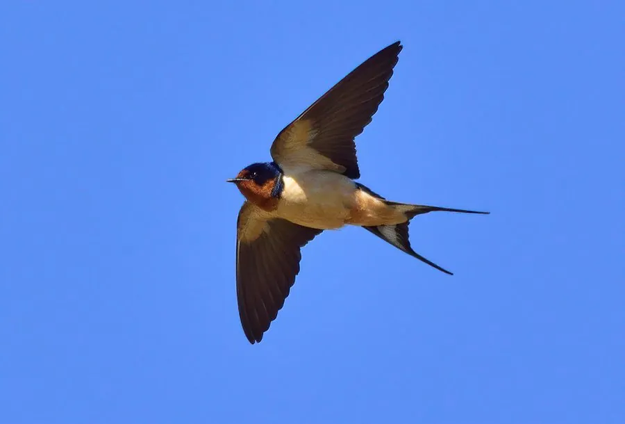

鸟类 · 动物界
家燕 Hirundo rustica

翅尖尾长、蓝黑背羽配栗红色喉部的候鸟，喜欢在屋檐下用泥团筑巢育雏，是中国人最熟悉的报春使者。
- 分类
- 门脊索动物门纲鸟纲目雀形目科燕科属燕属
- 栖息环境
- 农田、村庄、城镇的屋檐、桥梁与畜禽舍，只要有开阔上空可供捕虫
- 地理分布
- 繁殖于欧亚大陆和北美，越冬于非洲、南亚和东南亚，中国大部分地区夏季常见
- 保护级别
- IUCN 无危（LC）；中国“三有”保护动物
物种志
家燕体长 15–20 cm，翼展 29–35 cm，体重 16–22 g。背部呈带金属光泽的蓝黑色，额头和喉部为栗红色，胸前有一道蓝黑色横带，腹部白色；尾羽很长，外侧尾羽延伸成细长的“剪刀尾”。它的翅膀尖而窄，飞行时快速灵活，能在空中连续完成急转弯。
家燕繁殖于欧亚大陆和北美，越冬于非洲、南亚和东南亚，中国大部分地区夏季都能见到。它们喜欢在村庄、城镇的屋檐、梁下和桥梁上，用泥团、草茎和唾液砌成碗状巢，每窝产卵 4–5 枚，孵化 14–16 天，一对亲鸟每年可以繁殖 2 窝。家燕几乎完全在空中捕食蚊、蝇、蛾类和蜻蜓等飞虫，育雏期能消灭大量害虫。秋季它们结群南迁，迁徙路线跨越数千千米，白天边飞边觅食，夜晚集群休息。
形态与习性
- 食性在空中捕食蚊、蝇、蛾类和蜻蜓等飞虫
- 体长15–20 cm，含延长的尾羽
- 翼展29–35 cm
- 体重16–22 g
- 繁殖泥巢碗状，每窝 4–5 枚卵，孵化 14–16 天
- 年繁殖每年可繁殖 2 窝
- 迁徙秋季南迁至东南亚、印度，迁徙时节可结群数万只
趣味知识
- 家燕用泥团、草茎和唾液在屋檐下砌成碗状巢，一对亲鸟每年可繁殖 2 窝。
- 它们能在飞行中边飞边捕食昆虫，长尾羽像剪刀一样帮助急转弯。
- 中国民间把燕子筑巢视为吉祥的象征，一般不会惊扰屋檐下的燕巢。
- 家燕的迁徙路线跨越数千千米，白天边飞边觅食，夜晚集群休息。